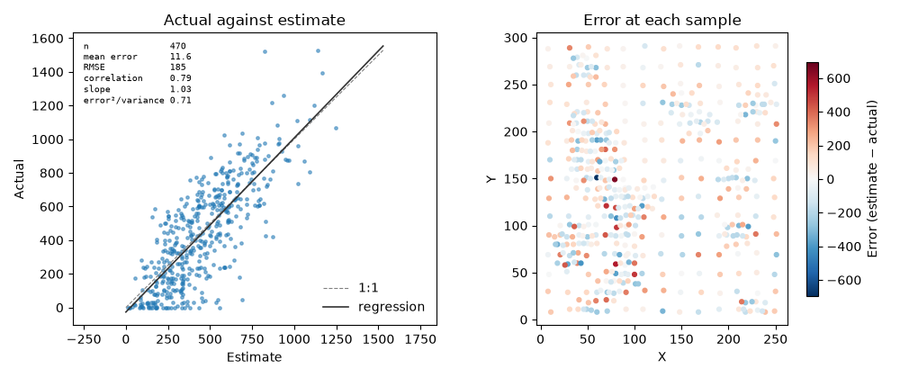
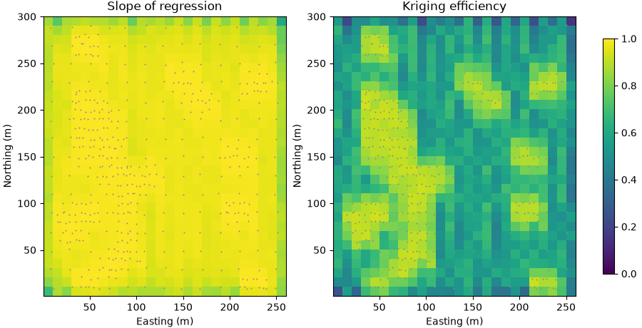
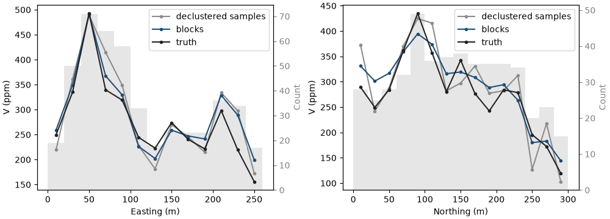
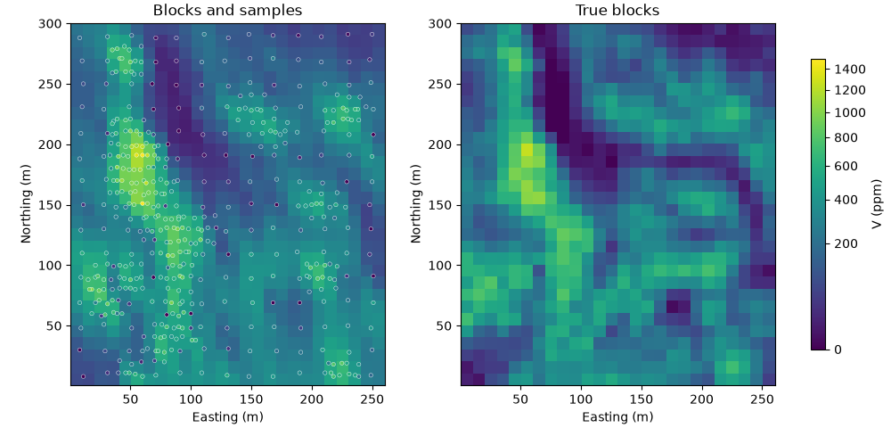
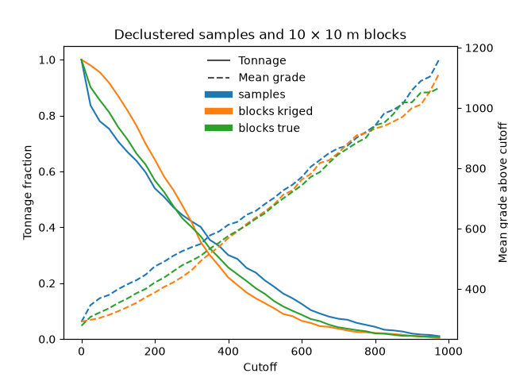

Note
Click here to download the full example code
Checking a model¶

- 1. Samples and support
- 2. Describing data
- 3. Spatial continuity
- 4. Kriging
- 5. Simulation
- 6. Checking a model
A block model is a claim about ground nobody has sampled. Test the claim before anyone plans a mine on it. Check that it reproduces the data's mean, measure its errors where you can, look for high estimates that run too high, follow it slice by slice against the data, and test its tonnage above a cutoff.
What you'll learn
- How to compare a model's global mean with the declustered data.
- How cross-validation measures errors at the samples, and what each error statistic tells you.
- What conditional bias is, and how the slope of regression and kriging efficiency measure it.
- How swath plots and sections check a model locally.
- Why smoothing distorts grade-tonnage curves.
- How these checks feed resource classification.
Prerequisites: kriging, block support from samples and support, and declustering from describing data. Simulation helps for the grade-tonnage section.
A model is a claim to test¶
Each check compares the model with something independent of it: the declustered samples, samples the estimate never saw, or averages over slices of the deposit. In a real project you never know the truth, so these comparisons are all you have. Walker Lake also has the exhaustive truth, so you can see how well each check predicts the real error.
The model under test is block kriging of V on 780 blocks of 10 × 10 m, with the variogram and an anisotropic
search from chapter 4. diagnostics=True returns, with each estimate, the measures of
conditional bias used later.
import sys
from pathlib import Path
HERE = Path(__file__).parent if "__file__" in globals() else Path.cwd()
sys.path.insert(0, str(HERE.parents[1] / "examples"))
import boitata as bt
import matplotlib.pyplot as plt
import numpy as np
from common import ACCENT, GRAY, INK, map_axes, save
from matplotlib.colors import PowerNorm
samples = bt.datasets.walker_lake()
truth = bt.datasets.walker_lake_exhaustive()["V"].reshape(300, 260)
xy, v = samples.coords, samples["V"]
weights = bt.cell_declustering(xy, v, sizes=np.arange(2.5, 102.5, 2.5)).weights
azimuths = np.arange(0, 180, 22.5)
directional = [bt.experimental_variogram(xy, v, 10.0, 120.0, azimuth=a) for a in azimuths]
model = bt.Variogram.fit_directional(
directional, [(a, 0) for a in azimuths], ["spherical", "spherical"], weighting="count/gamma"
)
def search(max_samples):
return bt.Search(
radius=80, max_samples=max_samples, min_samples=4, rotation=model.rotation, ratios=(0.5, 1.0)
)
max_samples = 24 # @param {type:"slider", min:4, max:64, step:4}
blocks = bt.BlockModel(origin=(0.5, 0.5), size=(10, 10), count=(26, 30))
kriging = bt.BlockKriging(model, search(max_samples), size=(10, 10), discretization=(5, 5, 1)).fit(xy, v)
d = kriging.predict(blocks, diagnostics=True)
true_blocks = truth.reshape(30, 10, 26, 10).mean(axis=(1, 3)).ravel()
kriged = blocks.with_columns({"value": d["value"], "truth": true_blocks})
print(f"{len(true_blocks)} blocks estimated")
Out:
780 blocks estimated
Global mean¶
The simplest check compares the mean of the blocks with the declustered mean of the data. The samples cluster in high-grade areas, so their plain average overstates the deposit, and a model that matched it would be biased high.
bias = bt.global_bias(kriged["value"], v, data_weights=weights)
print(f"naive sample mean {v.mean():.1f} ppm, declustered {bias['data_mean']:.1f} ppm")
print(f"blocks {bias['estimate_mean']:.1f} ppm, relative bias {bias['relative']:+.1%}")
print(f"true blocks {true_blocks.mean():.1f} ppm")
Out:
naive sample mean 435.3 ppm, declustered 290.7 ppm
blocks 291.7 ppm, relative bias +0.3%
true blocks 278.0 ppm
The blocks average 291.7 ppm against a declustered 290.7 ppm, a bias of +0.3 %. The naive mean, 435.3 ppm, would have flagged a false 33 % underestimate. Both the blocks and the declustered samples sit above the true 278.0 ppm. This check measures agreement with the data, so it cannot see an error that the declustering weights share. A difference of a few percent is common. A larger one points at a search that reaches into another domain, a variogram with the wrong anisotropy or declustering that needs another look.
Cross-validation¶
Cross-validation measures errors where you know the answer: at the samples. Leave-one-out cross-validation hides
one sample, estimates its location from the others with the same variogram and search, and records the error, for
every sample in turn (Figure 1). K-fold cross-validation hides a whole fold at a time, one in k of the samples,
so each estimate sees data a fraction 1/k sparser.
Each point estimator in Boitatá has cross_validate, which returns the actual values, the estimates and the
kriging variances with the summary statistics:
point = bt.OrdinaryKriging(model, search(max_samples)).fit(xy, v)
results = {}
for folds in (None, 10, 5):
name = "leave-one-out" if folds is None else f"{folds}-fold"
cv = results[name] = point.cross_validate(folds=folds)
print(
f"{name:>13}: mean error {cv.mean_error:5.1f}, RMSE {cv.rmse:5.1f} ppm, correlation {cv.correlation:.2f}, "
f"slope {cv.slope:.2f}, error²/variance {cv.standardized_squared_error:.2f}"
)
Out:
leave-one-out: mean error 11.6, RMSE 185.4 ppm, correlation 0.79, slope 1.03, error²/variance 0.71
10-fold: mean error 8.1, RMSE 189.4 ppm, correlation 0.78, slope 1.03, error²/variance 0.73
5-fold: mean error 9.6, RMSE 193.2 ppm, correlation 0.77, slope 1.03, error²/variance 0.74
Each statistic answers one question:
| Statistic | Question | Ideal | Leave-one-out |
|---|---|---|---|
| Mean error | Are estimates too high or too low on average? | 0 | 11.6 ppm |
| RMSE | How large is a typical error? | small | 185.4 ppm |
| Correlation | Do estimates rank samples in the right order? | 1 | 0.79 |
| Slope | Are high estimates too high and low ones too low? | 1 | 1.03 |
| Error² / variance | Does the kriging variance match the real errors? | 1 | 0.71 |
A slope of 1.03 means the leave-one-out estimates are free of conditional bias. The last statistic, 0.71, means the kriging variance is about 40 % larger than the squared errors it should predict, so intervals built from it are too wide. Errors grow as the folds get fewer: the RMSE rises from 185.4 ppm with leave-one-out to 193.2 ppm with five folds, because each estimate loses more of its neighbors. Leave-one-out judges the model at the sample spacing, which in the clusters is finer than most blocks see.
The math
With \(e_i = z^*_i - z_i\) the error at sample \(i\) and \(\sigma^2_i\) its kriging variance, [ \text{ME} = \frac{1}{n}\sum_i e_i, \qquad \text{RMSE} = \sqrt{\frac{1}{n}\sum_i e_i^2}, \qquad \text{SSE} = \frac{1}{n}\sum_i \frac{e_i^2}{\sigma^2_i}. ] The slope is \(b\) in the least-squares line \(z = a + b\, z^*\): actual value regressed on estimate.
bt.plot.cross_validation draws the scatter with its regression line and statistics. With kind="errors" and the
sample coordinates, it maps the errors:
fig, (a, b) = plt.subplots(1, 2, figsize=(10, 4.2))
bt.plot.cross_validation(results["leave-one-out"], ax=a)
a.set_title("Actual against estimate")
bt.plot.cross_validation(results["leave-one-out"], kind="errors", coords=samples, ax=b)
b.set_title("Error at each sample")
fig.tight_layout()
save(fig, "cross_validation")

Pitfall
Cross-validation tests the variogram and search together at the sample locations. A good score does not guarantee good blocks far from the data, and in a clustered data set the clusters dominate the statistics. Use it to compare choices, such as two searches, more than to certify a model.
Conditional bias¶
An estimate can be right on average and wrong for the blocks that matter. Plot the true value against the estimate and fit a line (Figure 2). If its slope is below 1, blocks estimated high are lower in reality on average, and blocks estimated low are higher. That is conditional bias, and it hurts at a cutoff: the blocks selected as ore carry less metal than the model promised.
Kriging predicts this slope for each block from the variogram and the data layout, without knowing the truth. It also predicts the kriging efficiency, the share of the block's variance the estimate resolves: 1 for a block known without error and 0 for one known no better than the global mean.
The math
With \(Z\) the true block value and \(Z^*\) its estimate, the slope of regression and the kriging efficiency are [ b = \frac{\operatorname{cov}(Z, Z^)}{\operatorname{var}(Z^)}, \qquad \text{KE} = \frac{\sigma^2_{\text{block}} - \sigma^2_K}{\sigma^2_{\text{block}}}, ] where \(\sigma^2_{\text{block}}\) is the variance of true blocks and \(\sigma^2_K\) the kriging variance (Krige, 1996).
Few samples per block give noisy, conditionally biased estimates. More samples raise the slope and smooth the estimates. Compare a search of 4 samples with the one of 24 against the truth:
for n in (4, 24):
dn = kriging.with_search(search(n)).predict(blocks, diagnostics=True)
estimate = dn["value"]
top = estimate > np.quantile(estimate, 0.9)
print(
f"{n:2d} samples: predicted slope {np.nanmean(dn['slope']):.2f}, true slope "
f"{np.polyfit(estimate, true_blocks, 1)[0]:.2f}, efficiency {np.nanmean(dn['efficiency']):.2f}, "
f"top 10 % of blocks {estimate[top].mean():.0f} ppm estimated vs {true_blocks[top].mean():.0f} true"
)
Out:
4 samples: predicted slope 0.84, true slope 0.93, efficiency 0.62, top 10 % of blocks 723 ppm estimated vs 687 true
24 samples: predicted slope 0.96, true slope 1.02, efficiency 0.66, top 10 % of blocks 695 ppm estimated vs 692 true
With 4 samples the true slope is 0.93, and the top tenth of the blocks is estimated at 723 ppm where the truth holds 687 ppm, a 5 % overstatement in the blocks a mine would take. With 24 samples the slope is 1.02 and the top tenth is estimated at 695 ppm for a true 692 ppm. The predicted mean slope moves the same way, from 0.84 to 0.96, and sits below the truth in both cases. In the maps, slope and efficiency are high among the samples and drop in the gaps.
shape, extent = (30, 26), (0.5, 260.5, 0.5, 300.5)
fig, axes = plt.subplots(1, 2, figsize=(9, 4.6), layout="constrained")
for ax, key, title in (
(axes[0], "slope", "Slope of regression"),
(axes[1], "efficiency", "Kriging efficiency"),
):
im = ax.imshow(d[key].reshape(shape), origin="lower", extent=extent, vmin=0, vmax=1)
ax.scatter(xy[:, 0], xy[:, 1], s=2, color=GRAY, linewidths=0)
map_axes(ax, title)
fig.colorbar(im, ax=axes, shrink=0.8)
save(fig, "diagnostics")

Swath plots¶
The global mean can hide local bias: a model too high in the north and too low in the south still averages out. A swath plot cuts the model into slices along one direction and compares the mean of the blocks with the mean of the declustered samples in each slice (Figure 3). Build one per principal direction (easting and northing here, plus elevation in 3D).
bt.swath works on any container, a PointSet of samples or a BlockModel, and returns a table with the center,
count, mean, tonnage and metal of each slice. bt.plot.swath draws a list of them.
fig, axes = plt.subplots(1, 2, figsize=(10, 3.6), layout="constrained")
gaps = {}
for ax, axis, label in ((axes[0], "x", "Easting (m)"), (axes[1], "y", "Northing (m)")):
series = [
bt.swath(samples, "V", 20.0, axis=axis, weights=weights),
bt.swath(kriged, "value", 20.0, axis=axis),
bt.swath(kriged, "truth", 20.0, axis=axis),
]
gaps[axis] = np.abs(np.asarray(series[1]["mean"]) - np.asarray(series[2]["mean"])).max()
bt.plot.swath(series, labels=["declustered samples", "blocks", "truth"], ax=ax)
for line, color in zip(ax.lines, (GRAY, ACCENT, INK), strict=True):
line.set_color(color)
ax.legend()
ax.set(xlabel=label, ylabel="V (ppm)")
save(fig, "swaths")
print(
f"largest gap between blocks and truth in one slice: easting {gaps['x']:.0f} ppm, northing {gaps['y']:.0f} ppm"
)

Out:
largest gap between blocks and truth in one slice: easting 70 ppm, northing 52 ppm
The blocks follow the samples slice by slice, smoother than the sample means, which jump where few samples fall. Against the truth, the widest gap in a 20 m slice is 70 ppm along easting and 52 ppm along northing. The easting gap sits at the eastern edge, where the declustered samples overstate the truth as much as the blocks do. The model followed its data, and no check against the data can see that error. Look for runs: several slices in a row on the same side of the samples point at a trend the model misses, often near the edge of the data.
Sections¶
A picture of the model with the data on it shows what the summary numbers miss. Plot the blocks and the samples on
one color scale. Samples should sit on blocks of similar color, and high-grade trends should run the way the geology
does. Watch for artifacts such as stripes along the search ellipse or blotches around single high samples. In 3D,
do the same on sections and plans through the model with bt.plot.section and bt.plot.slab.
norm = PowerNorm(0.5, vmin=0, vmax=1500)
fig, axes = plt.subplots(1, 2, figsize=(10, 4.8), layout="constrained")
for ax, image, title in ((axes[0], d["value"], "Blocks and samples"), (axes[1], true_blocks, "True blocks")):
im = ax.imshow(image.reshape(shape), origin="lower", extent=extent, norm=norm)
map_axes(ax, title)
axes[0].scatter(xy[:, 0], xy[:, 1], c=v, s=10, norm=norm, edgecolors="white", linewidths=0.3)
fig.colorbar(im, ax=axes, shrink=0.8, label="V (ppm)")
save(fig, "plan")

Grade-tonnage curves¶
A grade-tonnage curve gives, for each cutoff, the tonnage above it and the mean grade of that tonnage. It is the check closest to money and the one smoothing distorts most. A smoothed model has fewer very low and very high blocks than reality (Figure 4). A cutoff below the mean then keeps too much tonnage, and one above the mean keeps too little, at a grade that depends on how the smoothing reshaped the tail.
bt.compare_models builds the curves of several block columns, and bt.plot.grade_tonnage draws them with the
declustered samples. With relative=True each tonnage is a fraction of the total, so samples and blocks share an
axis.
cutoffs = np.arange(0, 1000, 25.0)
curves = {
"samples": bt.grade_tonnage(v, cutoffs, weights=weights),
"blocks": bt.compare_models(
kriged, {"kriged": d["value"], "true": true_blocks}, cutoffs, reference="true"
),
}
fig, ax = bt.plot.grade_tonnage(curves, relative=True)
ax.set_title("Declustered samples and 10 × 10 m blocks")
save(fig, "grade_tonnage")
for c in (300.0, 500.0):
est, tru = d["value"] >= c, true_blocks >= c
print(
f"cutoff {c:.0f} ppm: kriged {est.mean():.1%} of blocks at {d['value'][est].mean():.0f} ppm, "
f"true {tru.mean():.1%} at {true_blocks[tru].mean():.0f} ppm"
)

Out:
cutoff 300 ppm: kriged 41.9% of blocks at 462 ppm, true 40.1% at 494 ppm
cutoff 500 ppm: kriged 12.8% of blocks at 657 ppm, true 16.2% at 651 ppm
At 300 ppm, near the mean, the kriged blocks put 41.9 % of the area above cutoff against a true 40.1 %, at 462 ppm instead of 494 ppm. At 500 ppm they put 12.8 % against 16.2 %. The samples sit farther out than either, because a 10 × 10 m block averages out part of the point-scale variability. Compare blocks with blocks, and samples only after a change of support. With real data you have no true blocks, so the reference is a model with the right variability at block support: simulation averaged to blocks (chapter 5) or a change-of-support model of the declustered histogram.
Pitfall
A model can pass every check above and still give the wrong tonnage above a high cutoff. The global mean, cross-validation and swaths look at averages, and smoothing preserves averages. Test the tonnage at the cutoffs that matter against a reference with the right variability.
Resource classification¶
Classification turns these checks into confidence labels for reporting: measured, indicated or inferred, in
decreasing order of confidence. Reporting codes leave the rules to a competent person, who usually combines drill
spacing, geological continuity and the kriging diagnostics above. bt.classify applies rules in order. The first
rule that holds wins, and blocks where none holds get the default:
criteria = {"slope": d["slope"], "efficiency": d["efficiency"]}
rules = [
("measured", {"slope": (">=", 0.95), "efficiency": (">=", 0.75)}),
("indicated", {"slope": (">=", 0.85), "efficiency": (">=", 0.5)}),
]
classes = bt.classify(criteria, rules, default="inferred")
for name in ("measured", "indicated", "inferred"):
k = classes == name
error = np.sqrt(np.mean((d["value"][k] - true_blocks[k]) ** 2))
print(
f"{name:>9}: {k.mean():5.1%} of blocks, mean {d['value'][k].mean():3.0f} ppm estimated vs "
f"{true_blocks[k].mean():3.0f} true, RMSE {error:5.1f} ppm"
)
Out:
measured: 29.9% of blocks, mean 473 ppm estimated vs 469 true, RMSE 83.6 ppm
indicated: 57.6% of blocks, mean 220 ppm estimated vs 205 true, RMSE 108.8 ppm
inferred: 12.6% of blocks, mean 190 ppm estimated vs 157 true, RMSE 95.7 ppm
Measured blocks, 29.9 % of the area, are estimated within 1 % of their true mean and have the smallest errors, an RMSE of 83.6 ppm, although they hold the highest grades. Inferred blocks lie in the gaps and at the edges, in lower grades. Their RMSE of 95.7 ppm looks modest, yet their mean is overstated by a fifth, 190 ppm against 157 ppm. Errors in ppm follow grade as well as confidence, so rank confidence by the diagnostics and the drill spacing. The classification example adds drill spacing and smooths the classes into coherent zones.
Check before you move on
- Why compare the model's mean with the declustered mean and not the plain sample mean?
- What do a cross-validation slope below 1 and an error² / variance below 1 each tell you?
- A model has no global bias but a swath plot runs 15 % high over four slices in the east. What would you check?
- Why does a kriged model understate tonnage above a high cutoff?
- Which checks can see an error that the declustered samples share with the model?
See also
- Gallery: model checks, cross-validation, kriging diagnostics, classification, result plots and search calibration.
- API:
swath,grade_tonnage.
Next: the Workflows chapter runs these steps end to end on real problems, and the Guide explains how Boitatá is organized.
Total running time of the script: ( 0 minutes 1.047 seconds)
Download Python source code: learn_06.py